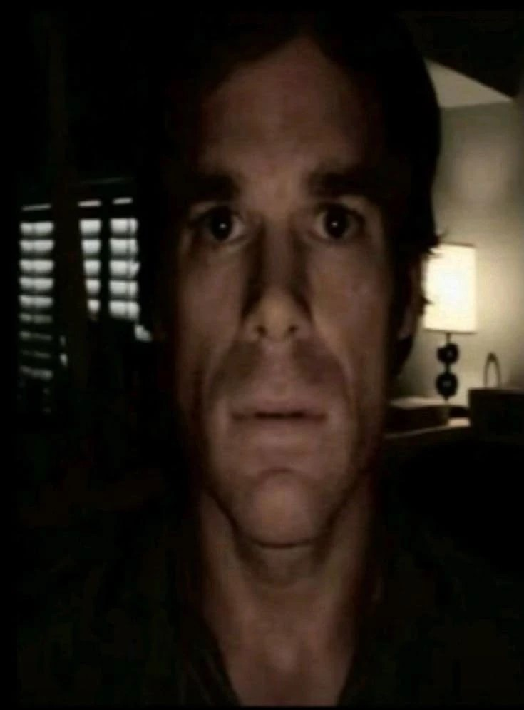
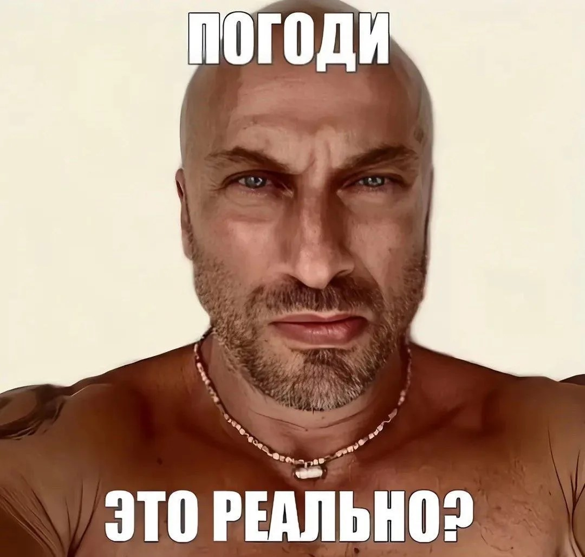
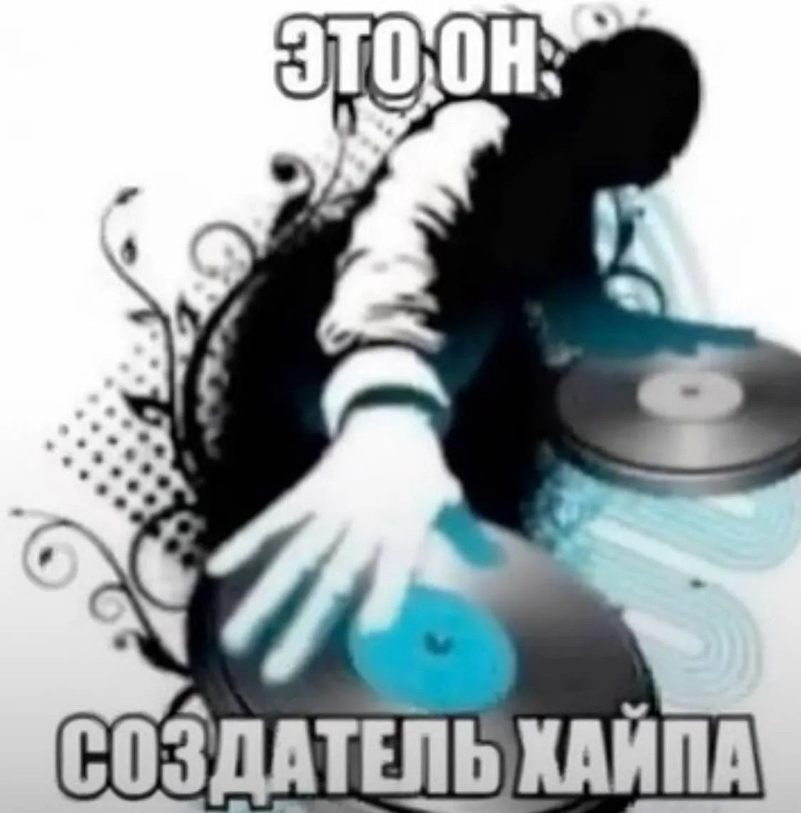
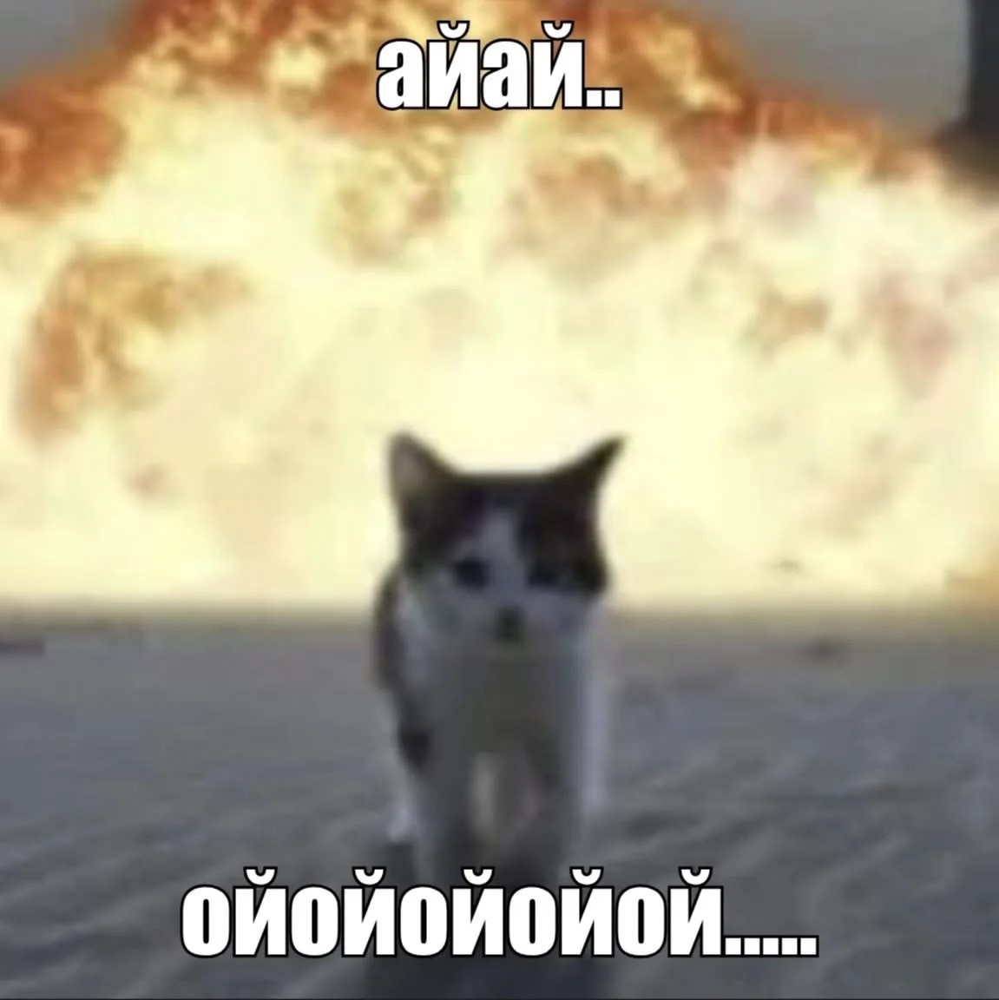
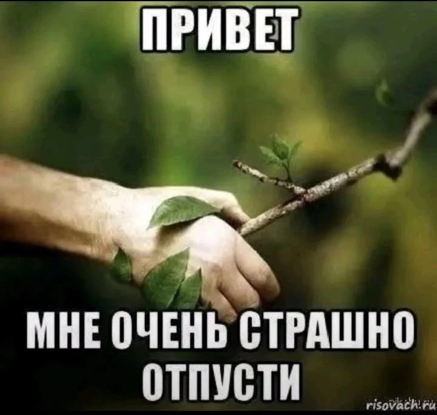
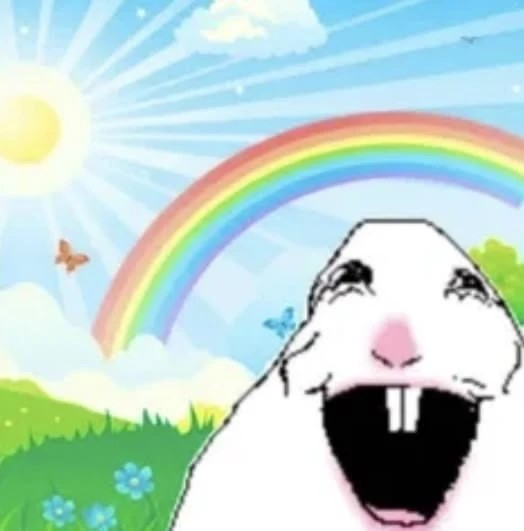
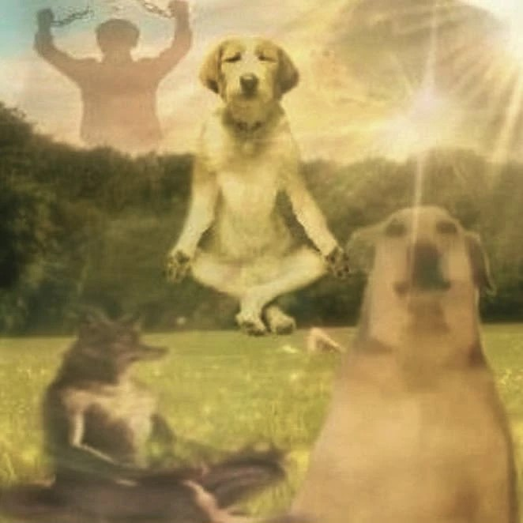
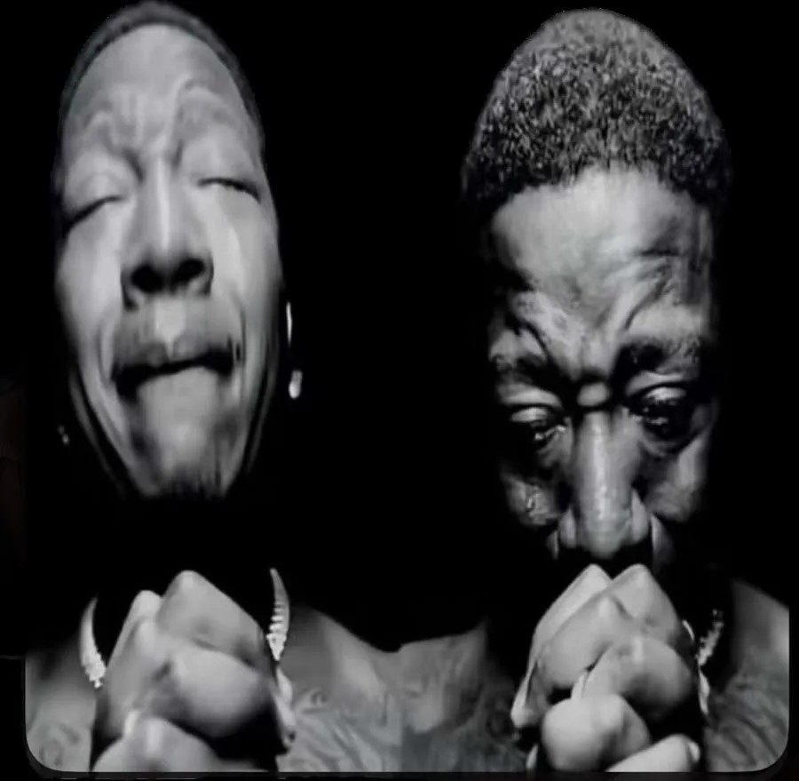
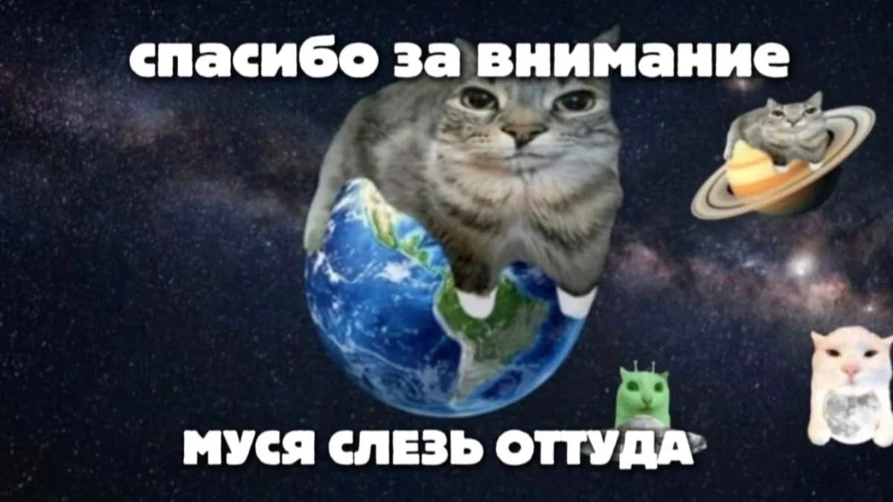

🗑️
Меньше отходов
Сокращаем количество мусора, отправляемого на полигоны.
Раздельный сбор — не сложно. Начни с того, что уже есть дома, и присоединяйся к экологическому движению.
Присоединиться ↓Сортируй сегодня — создавай чистое будущее!

Каждый день мы используем десятки вещей, покупаем напитки в пластиковых бутылках, получаем товары в картонных коробках, пользуемся бумажной упаковкой. Но задумываемся ли мы, что происходит со всем этим после использования?
Многие отходы могут стать сырьём для новых вещей, если правильно собирать и передавать на обработку.


Сокращаем количество мусора, отправляемого на полигоны.
Материалы получают шанс на повторное использование.
Ответственное обращение с отходами помогает заботиться о городе.

Газеты, журналы, офисная бумага и коробки. Сложи коробки и убери лишние элементы.
Бутылки и упаковка, которую принимает выбранный пункт. Опустоши тару.
Банки, бутылки и металлическая упаковка — сдавай отдельно, если принимаются.
Только специальные пункты сбора. Не выбрасывай в обычный контейнер.

Список принимаемых материалов и требования зависят от пункта сбора.
Начни с бумаги, картона и пластиковой упаковки
Не каждый вид пластика или упаковки принимается повсеместно
Загрязненные материалы могут испортить другие отходы
Например, складывай картонные коробки, а пластиковую тару опустошай
Батарейки и электронику относите только в специальные места сбора


Сортировать нужно не ради галочки, а ради того, чтобы отходы могли получить вторую жизнь.
Ты можешь внести свой вклад, даже если никогда не сортировал отходы. Каждый небольшой шаг — это возможность сделать окружающий мир чище. Главное — начать!

Начни с небольших шагов — каждый из них имеет значение!
Собери бумагу, картон и другие материалы, которые принимаются на переработку.
Узнай, где находится ближайший пункт приёма вторсырья, и выбери удобное место.
Стань участником экологической акции в своём учебном заведении или районе.
Расскажи друзьям и семье о раздельном сборе отходов и вдохнови их присоединиться.
Поделись полезными экологическими советами и информацией в социальных сетях.

Начни с одного вида вторсырья, затем постепенно расширяй сортировку. Маленькие шаги помогут сделать заботу об окружающей среде частью повседневной жизни.
Окружающая среда зависит не только от работы предприятий и организаций, но и от повседневных решений каждого из нас.
Раздельный сбор помогает ответственнее относиться к потреблению, сокращать количество смешанных отходов и поддерживать повторное использование материалов.

Сортируй, сдавай вторсырьё и вдохновляй окружающих своим примером. Вместе мы сможем сделать наш город чище!
Собери вторсырьё, пригласи друзей и внеси вклад в более чистое будущее.
Дата: 01.12.2026
Организаторы: студенты 1 курса ММУ, группа ЮГП631-9
Место: уточняется
Я участвую!Отмечай задания и смотри, как растёт твой вклад. Прогресс не сохраняется после закрытия страницы.
Выполнено: 0 из 5
Демо-форма: данные никуда не отправляются.
